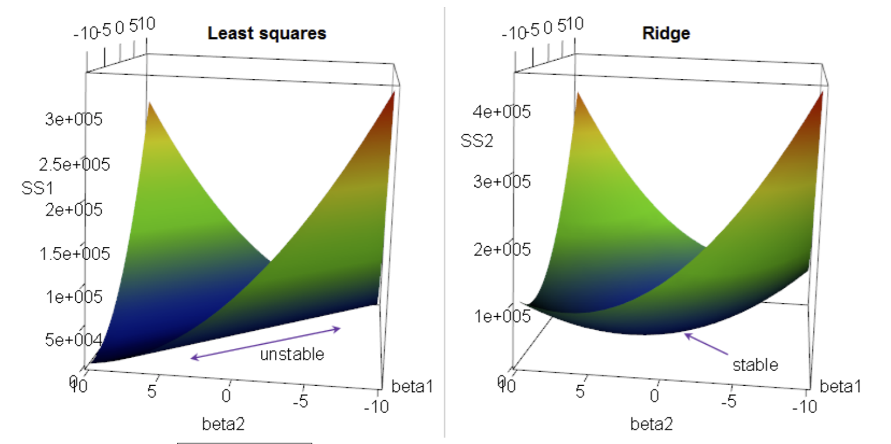
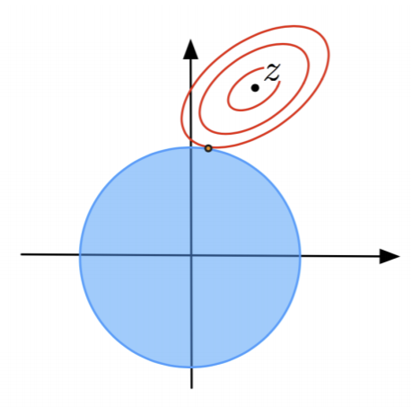
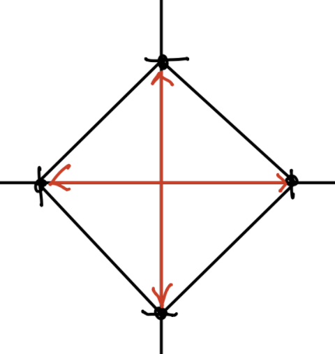
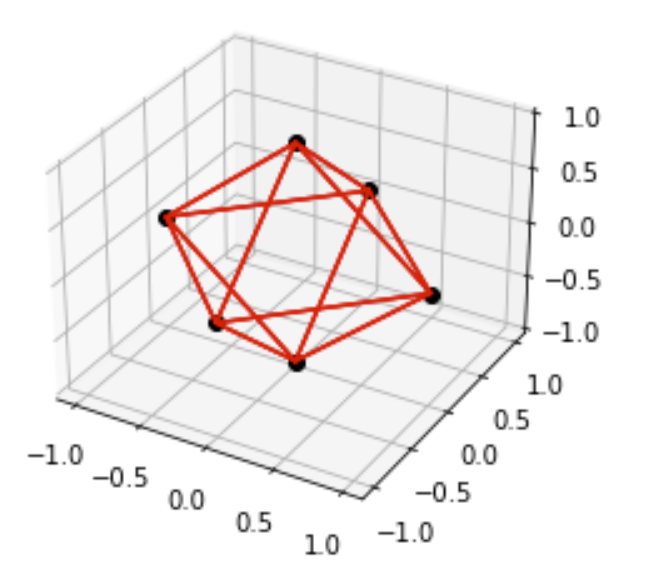
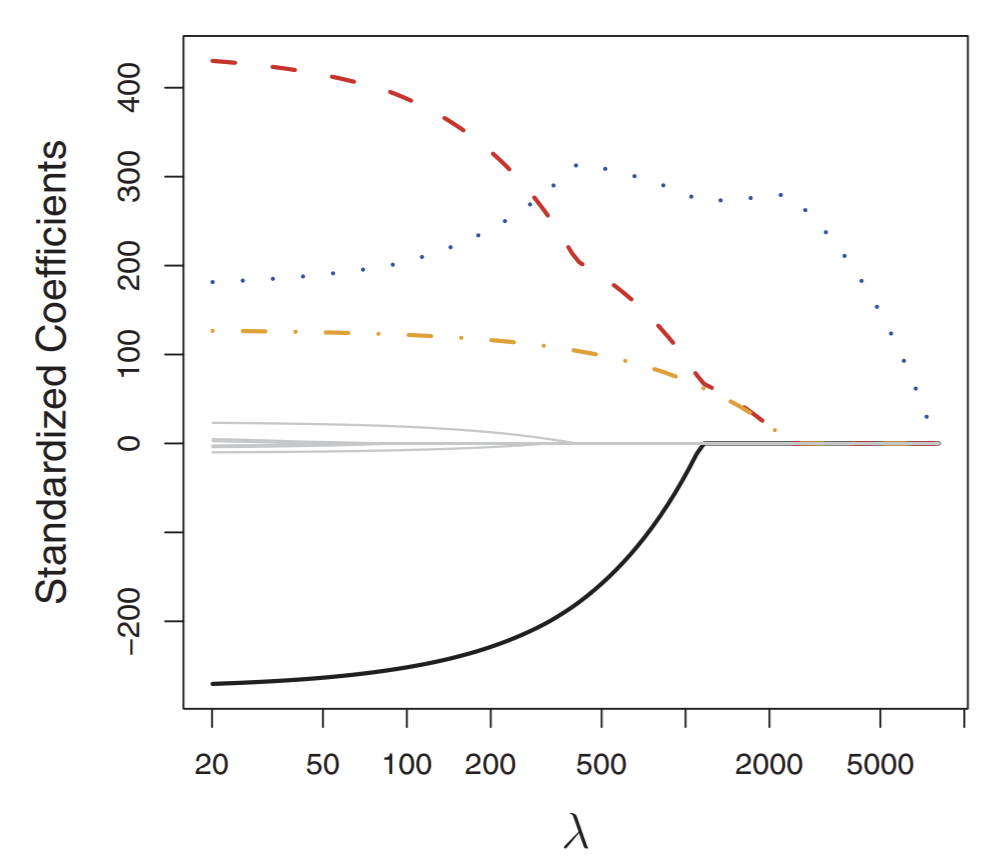

Regularization¶
Sometimes, a model can learn very large weights, which can cause a lot of overfitting. To combat this, we use regularization: putting limits on learning weights, making them smaller than they should be. To put this in effect, we can add a term that penalizes large weights in the risk function. The two main types of regularization:
L1 regularization: penalty term is \(\lambda \sum_i |w_i|\)
L2 regularization: penalty term is \(\lambda ||w||^2\).
where \(\lambda\) is a hyperparameter that we can control: the larger it is, the more that large weights are penalized. Let’s take a look at this in depth.
Ridge Regression¶
Ridge regression is regression applied with \(L_2\) regularization. In ridge regression, we are now finding \(w\) that minimizes
Note
Ridge regression is a special case of Tikhonov regularization, which represent regularization methods where all weights are penalized equally.
Note that we don’t want to penalize the bias term, so \(w'\) is just \(w\) except the bias term is 0. In training, the penalty term “pushes” the model’s learned weights \(w\) to be smaller. By shrinkage of \(w\), we limit the magnitude of our normal vector.
There are two common reasons why we want to apply regularization- specifically, ridge regression:
Ridge Regression guarantees a unique solution.
Regularization reduces overfitting.
Let’s analyze each of these two reasons in detail.
Before in standard OLS, in the case that \(d > n\) (more features than rows), our normal equation matrix \(X^TX\) does not have full rank, and therefore cannot be inverted to obtain a closed-form solution. In other words, \(X^TX\) was only positive semidefinite: it had a few 0-eigenvalues. However, the addition of the penalty term guarantees a positive definite \(X^TX\), and thus positive eigenvalues, and thus a unique solution. This will become even clearer once we derive the closed-form solution for \(w\).
Take a look at the diagram below:
{kind=link}
Here, we plot risk vs. a 2-dimensional feature space. The z axis is the cost function \(J\) we want to minimize. On the left, our cost function takes a positive semidefinite quadratic form: all this means is that for all possible inputs \(w\), \(J(w) \ge 0\). Note there’s infinite solutions along the flat line at the bottom of the paraboloid.
On the right, we have the regularized cost function, which makes it positive definite: \(J(w) > 0\) for all \(w\). It has one unique solution.
Note
Regression problems with infinite solutions are said to be ill-posed. “Regularization” itself implies we turn an ill-posed problem into a well-posed one: one with a unique solution.
The second reason for regularization: dealing with overfitting. In ridge regression, we are reducing overfitting by reducing variance. Remember that when small changes to input lead to large changes in output, we have high variance and overfitting. Imagine regression gives us a curve \(h(x) = 500x_1 - 500x_2\). However, the points are well-separated. But the labels are constrained as \(y_i \in [0,1]\). So the points aren’t close, but the labels are. The weights being that large doesn’t really make sense- a very small change in \(x\) can give a very large change in \(y\)! When a curve \(h\) oscillates a lot, it’s a sign of overfitting and high variance.
So to “resist” learning these large weights, we add a penalty term for them.
Let’s look at a visual example. Say our objective function is for least squares: \(J(w) = ||Xw -y||^2\). Note there’s no regularization here. At the center of the red contours of \(J(w)\), we have our optimal solution \(\hat{w}\). We also plot the regularization term \(\lambda||\w'||^2\) in blue, which have perfectly spherical isocontours.
{kind=link}
Note that the optimal solution is where an isocontour of 1 barely touches an isocontour of the other. In other words, there exist 2 isovalues for \(||Xw-y||^2\) and \(\lambda||\w'||^2\) such that they intersect tangentially, and intersection point \(\hat{w}\) is our unique solution for a given \(\lambda\). For different \(\lambda\), the solution can and will be different. This means we can have a curve of all optimal solutions for every given \(\lambda \ge 0\). For example, one endpoint is when \(\lambda\) = 0: this is the center point of the red ellipses, as there’s regularization and we’re back to least squares.
Note
It is also extremely common to view penalty terms as a constraint rather than part of the cost function to minimize. For example, in L2 regularization, we could also write the problem as minimizing \(||X \cdot w - y||^2\) subject to constraint \(||w'||^2 \le T\) for some arbitrary scalar \(T\). Fortunately, for visualization purposes, it’s the exact same; now our penalty term’s isocontours are represented as \(T\).
Let’s solve \(\nabla J(w) = 0\) through calculus. We get normal equations
where \(I'\) is identity matrix with the bottom right term set to 0 (since we don’t penalize the bias term). Once we solve for \(w\), we have our model: our hypothesis function \(h(z) = w^Tz\).
With increasing \(\lambda\), we of course apply more regularization, forcing \(||w'||\) to get smaller and smaller. Assuming our data’s true relationship is linear with Gaussian noise (\(y = Xv + e\)), the variance of ridge regression is equal to
which is the standard variance over the distribution of all possible \(X,y\). The matrix \(\lambda I'\) gets larger as lambda does, so as \(\lambda \to \infty\) variance goes to 0, BUT bias will increase.

As lambda gets larger, there’s more regularization, which means less variance but more bias. Eventually our model weights get so small that our model \(h\) itself is actually pushed to 0, and at this point it’s obviously not a good approximation of \(g\). The \(\lambda\) where we minimize test error is considered optimal- we find this via validation.
Note
\(\lambda ||w'||^2\) penalizes all weights equally. This might not hold well in practice, since features can have very different measurement units. For that reason, it makes sense to normalize all features s.t. they all have the same variance, and are thus on the same “scale”. Alternatively, we can implement an asymmetric penalty by replacing \(I'\) with some other diagonal matrix. For example, we might want to penalize cubic feature weights more than linear features, so we’d give the corresponding diagonal element a higher value.
Bayesian Justification for Ridge Regression¶
Why use \(L_2\) regularization in particular for ridge regression?
First, let’s assign a prior probability on \(w'\): we don’t assume all weights are equally likely. If a weight is big, be skeptical, if small, it’s probably more likely to be correct. We can express this by stating that our weights \(w' \sim N(0, \sigma^2)\). So very large \(w'\) will have very low PDF values or probabilities.
Now, we apply MLE to the posterior probability. Remember Bayes theorem gives posterior
where \(f(w')\) is our prior, normally distributed.
We can also think of the class-conditional probability/density as the likelihood function of \(w\) given \(X, y\), so we get
Now the log posterior, which we want to maximize, is given as
which is equivalent to minimizing
and we are done. We’ve shown that given our weights follow some normal distribution, the best way to apply regularization would be through an \(L_2\) penalty term.
Note
This method of finding a point \(w\) that maximizes the posterior probability \(f(w|X,y)\) is called maximum a posteriori estimation (MAP). Setting a prior probability on weights is another way to understand regularizing ill-posed problems.
Feature Subset Selection¶
Sometimes, we just have features that weren’t very useful. When we hit a point where most of our features are useless, these additional features just increase variance without reducing bias. In other words, they do more harm than good; we want to get rid of them. But how?
Ideally, we’d have a way to identify bad features and effectively get rid of them by setting corresponding weights in \(w\) to 0. This means less overfitting and smaller test errors. Also, we make our model simpler, and thus easier to interpret it meaningfully.
This idea is useful in pretty much all classification and regression. However, how can we figure out which subset of features to choose? After all, different features can encode the same information in different ways, so things might get tricky.
Let’s start with the naive algorithm for best subset selection: try all \(2^d-1\) nonempty feature subsets, train a classifier for each, and choose the best one by validation. Of course, this is incredibly inefficient and slow if \(d\) is large. No good. So here’s where we need heuristics.
Heuristic 1: Forward Stepwise Selection¶
In forward stepwise selection, we start with the 0 features model (null model), then continue to add the best feature remaining at each iteration. To select the best feature, we train \(d\) models (one per remaining feature) and choose the feature that gives the best validation accuracy. We stop when validation errors start to increase instead of decrease (from overfitting).
So now we’re training \(O(d^2)\) models instead of \(O(2^d)\). Better. However, our algorithm isn’t perfect: for example, the optimal 2-feature model might not be found if, for both of the features that make it, have shitty validation accuracy as one-feature models on the previous iteration.
Heuristic 2: Backward Stepwise Selection¶
In backward stepwise selection, it’s just the other way around: we start with all \(d\) features and remove one at a time until validation error starts to decrease. This also trains \(O(d^2)\).
Which is the better choice? Depends on how many features you think will be useful in your final model. If you only think a few features would be good, go forward, and vice versa. For example, for spam classification FSS is probably better, since only a few factors generally indicate the presence of spam.
LASSO Regularization¶
The other commonly used type of regularization is LASSO regularization. LASSO stands for “least absolute shrinkage + selection operator”. Now we are using \(L_1\) regularization, so our cost function is now:
where \(||w'|| = \sum_{i=1}^{d}|w_i|\) : the sum over the \(d\) components of the normal vector. Again, we don’t penalize the bias term.
The advantage of L1 regularization over L2 is it naturally sets some weights to zero. This can be used to emulate feature subset selection. The disadvantage: it’s harder to minimize our cost function with this kind of penalty term.
Recall the isosurfaces of \(||w'||^2\) in ridge regression are hyperspheres. However, the isosurfaces of \(||w'||_1\) are cross-polytopes. The unit cross-polytope is the convex hull of all unit coordinate vectors, including positive and negative versions of those vectors. You can think of the convex hull as the smallest polygon containing points (vectors) in some set \(S\).
For example, the convex hull of a 2D vector (where \(S\) contains the 2d unit coordinate vectors) is this diamond shape:
{kind=link}
This diamond shape is the isocontour (isosurface) where \(||w'||_1 = 1\).
Extending to 3D, our polytope looks like this:
{kind=link}
For \(d\) dimensions, we’ll have \(2d\) coordinate vectors, and taking the convex hull of them gives the polytope in \(d\)-dimensional space.
Remember in ridge regression, we find the point where the isocontours of regression and regularization touch tangentially. For LASSO, all that changes is the regularization isosurface: instead of hyperspheres, our isosurfaces are now convex hulls.
Because we are now summing absolute values of coefficients, LASSO solutions will tend to have multiple weights set to 0. Again, \(\lambda\) is the hyperparameter that penalizes weights, so larger \(\lambda\) means more weights set to 0 and effectively excluded. The reasoning behind this is related to the graphical properties of convex hulls and isocontours, and I won’t explain it here.
Let’s look at a graph that shows how weights behave for a higher dimensional space.
{kind=link}
This chart shows how weights change in the optimal solution for LASSO in response to \(\lambda\). We can see that four weights change significantly while the others do not.
Again, like ridge, we probably want to normalize features for LASSO.
Two main algorithms for solving LASSO are called least-angle regression (LARS) and forward stagewise.